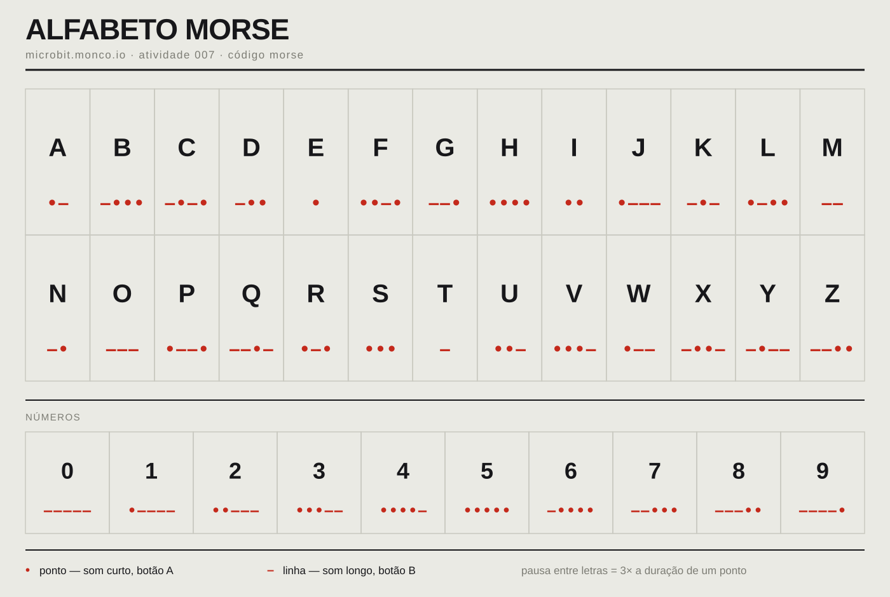

Um micro:bit só sabe fazer pontos e linhas. A frase inteira mora no ritmo de quem carrega nos botões — e só existe, do outro lado, se alguém souber ouvir as pausas certas.
Ao contrário das outras atividades do catálogo, aqui os dois micro:bits do grupo correm programas diferentes — um só emite, o outro só recebe. Nenhum dos dois sabe soletrar; sabem só emitir e ecoar dois símbolos.
Botão A mostra um ponto e toca um som curto. Botão B mostra uma linha e toca um som longo. Cada carregar envia esse símbolo por rádio.
Ao receber um símbolo, mostra e toca exatamente o mesmo que o emissor mostrou — é o eco que a equipa de longe vai ver e ouvir.
Um abanão manda um sinal de reset: o recetor mostra uma cruz e limpa o ecrã. Combina-se antes: "se abanar, esqueçam tudo e recomecem a escrever."
O programa nunca diz "isto é o fim de uma letra". Não há esse sinal. Quem decide onde uma letra acaba é o ritmo de quem emite — uma pausa curta separa símbolos da mesma letra, uma pausa mais longa separa letras. É o operador, não o código, que carrega o significado.
| Intervalo | Duração relativa | Significa |
|---|---|---|
| Ponto | 1 unidade | Símbolo |
| Linha | 3 unidades | Símbolo |
| Entre símbolos | 1 unidade | Mesma letra |
| Entre letras | 3 unidades | Letra nova |
| Entre palavras | 7 unidades | Palavra nova |
É a proporção clássica do Morse internacional. Nesta atividade não se cronometra ao milissegundo — combina-se só "pausa curta" e "pausa longa, conta até três" antes de começar.
«Sem falar, só com pontos e linhas, conseguem mandar uma frase até ao fundo do corredor?» Mostrar o cartaz do alfabeto — ainda sem código.
Cada grupo de 4 carrega um programa num micro:bit — emissor — e outro programa no segundo — recetor. Seguir os passos do guião mais abaixo: o que já vem feito, e o único valor que se muda — o canal, igual nos dois aparelhos.
O grupo divide-se em dois pares. O par do emissor escolhe uma frase curta — três a cinco palavras — e escreve-a em Morse no papel, usando o cartaz do alfabeto. Ensaiam o ritmo antes de sair de perto um do outro.
O par do recetor afasta-se — outra sala, ou o fundo do corredor — com o cartaz do alfabeto na mão. O par do emissor envia a frase devagar. O par do recetor vai escrevendo os símbolos e traduz letra a letra.
A frase chegou inteira? Onde é que se perdeu uma letra — foi o ritmo, foi o alcance do rádio, foi a tradução? Trocar os papéis, se houver tempo.
Se houver mais do que um grupo na mesma sala, cada grupo precisa do seu próprio canal de rádio — caso contrário todos ouvem as mensagens de todos. O emissor e o recetor do mesmo grupo têm sempre de partilhar o mesmo canal.
| Grupo | Canal | Emissor | Recetor |
|---|---|---|---|
| 1 | 11 | Programa emissor | Programa recetor |
| 2 | 12 | Programa emissor | Programa recetor |
| 3 | 13 | Programa emissor | Programa recetor |
| 4 | 14 | Programa emissor | Programa recetor |
O cartaz de apoio para os grupos recetores — imprimir ou projetar antes da transmissão:
Abrir o alfabeto Morse em tamanho grande

Dois programas, um por aparelho. No MakeCode, abrir o separador { } JavaScript, colar, e voltar a Blocos. Cada grupo cola os dois inteiros e edita só uma coisa em cada um — o canal — a seguir, passo a passo.
morse-emissor.ts · botões A e B
// ===== CÓDIGO MORSE · EMISSOR — microbit.monco.io ===== // >>> A EQUIPA ESCOLHE AQUI <<< let CANAL = 11 radio.setGroup(CANAL) input.onButtonPressed(Button.A, function () { basic.showLeds(` . . . . . . . . . . . . # . . . . . . . . . . . . `) music.playTone(880, 120) radio.sendString("PONTO") basic.pause(150) basic.clearScreen() }) input.onButtonPressed(Button.B, function () { basic.showLeds(` . . . . . . . . . . # # # # # . . . . . . . . . . `) music.playTone(880, 450) radio.sendString("LINHA") basic.pause(150) basic.clearScreen() }) input.onGesture(Gesture.Shake, function () { radio.sendString("RESET") basic.showIcon(IconNames.No) basic.pause(400) basic.clearScreen() }) basic.showIcon(IconNames.Yes)
morse-recetor.ts · escuta o rádio
// ===== CÓDIGO MORSE · RECETOR — microbit.monco.io ===== // >>> A EQUIPA ESCOLHE AQUI <<< let CANAL = 11 radio.setGroup(CANAL) radio.onReceivedString(function (receivedString) { if (receivedString == "PONTO") { basic.showLeds(` . . . . . . . . . . . . # . . . . . . . . . . . . `) music.playTone(660, 120) basic.pause(150) basic.clearScreen() } else if (receivedString == "LINHA") { basic.showLeds(` . . . . . . . . . . # # # # # . . . . . . . . . . `) music.playTone(660, 450) basic.pause(150) basic.clearScreen() } else if (receivedString == "RESET") { basic.showIcon(IconNames.No) basic.pause(400) basic.clearScreen() } }) basic.showIcon(IconNames.Yes)
Quatro passos — dois códigos, uma só variável repetida em ambos.
CANAL é o único valor do programa — e tem de ser exatamente igual no emissor e no recetor do mesmo grupo, ou não se ouvem. Se houver vários grupos na sala, cada um usa um canal diferente.
// >>> A EQUIPA ESCOLHE AQUI <<< let CANAL = 11 radio.setGroup(CANAL)
Botão A mostra um ponto e um som curto; botão B mostra uma linha e um som longo. Os dois enviam o respetivo símbolo por rádio antes de limpar o ecrã, prontos para o próximo.
input.onButtonPressed(Button.A, function () { basic.showLeds(`...`) music.playTone(880, 120) radio.sendString("PONTO") })
Um gesto de abanar envia RESET por rádio. O recetor mostra uma cruz por instantes e limpa o ecrã — o sinal combinado para "esqueçam tudo, recomeço a mensagem".
input.onGesture(Gesture.Shake, function () { radio.sendString("RESET") basic.showIcon(IconNames.No) })
O recetor não sabe soletrar — só repete, em ecrã e som, exatamente o símbolo que recebeu. É a equipa do lado de fora, com o cartaz na mão, que transforma pontos e linhas em letras.
radio.onReceivedString(function (receivedString) { if (receivedString == "PONTO") { … } else if (receivedString == "LINHA") { … } else if (receivedString == "RESET") { … } })
Uma edição só, repetida em dois ficheiros: o valor de CANAL, no passo 01, igual no emissor e no recetor.
| Item | Qtd | Nota |
|---|---|---|
| micro:bit V2 | 2 por grupo | Altifalante integrado — essencial para o som |
| Suporte de pilhas + AAA | 2 por grupo | Sem cabo, o recetor tem de se afastar |
| Cabos micro-USB | 2–3 | Só para carregar os programas, partilhados |
| Portátil com MakeCode | 1 por grupo | Carrega os dois programas, um a seguir ao outro |
| Cartaz do alfabeto Morse | 1 por par recetor | Impresso ou no telemóvel — ficheiro nesta página |
| Papel e caneta | 1 por par | Escrever a frase antes de emitir, e a tradução ao receber |
| Sintoma | Solução |
|---|---|
| O recetor não reage a nada | Confirmar que o canal é exatamente igual nos dois programas |
| Recebe mensagens de outro grupo | Dois grupos com o mesmo canal — mudar um deles |
| Deixa de responder a meio da sala | Fora de alcance — aproximar até voltar a responder e marcar esse limite |
| Letras coladas, difíceis de separar | O emissor está a carregar depressa demais — combinar contar "um, dois, três" nas pausas entre letras |
| Confundem ponto com linha ao ouvir | Normal ao início — reforçar que a linha dura claramente mais, quase o dobro |
O catálogo tem os planos completos de todas as sessões, com o mesmo nível de detalhe.